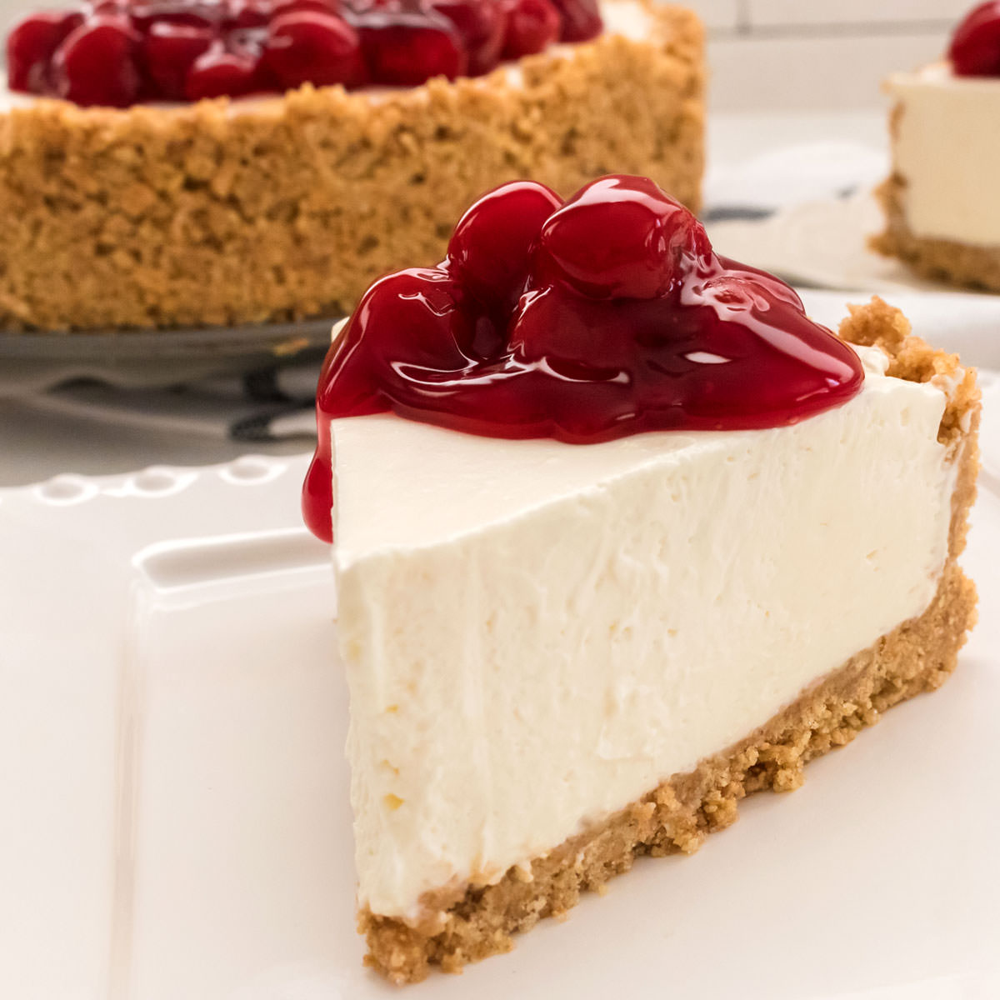

Cheesecake

Description
This is the best cheesecake recipe that I've come across, and believe me, I've tried my fair share. Rich, creamy
texture over a magnificent, crunchy graham cracker crust topped with fresh fruit. Yum!
Although there are easier recipes out there, but it is 100% worth the slightly longer preparation time. You'll
love yourself for sticking with it!
Ingredients
- 170 g graham cracker crust
- 2 tbsp sugar
- 1 tbsp brown sugar
- 7 tbsp butter
- 910 g cram cheese
- 200 g sugar
- 160 g sour cream
- 1.5 tsp vanilla extract
- 1/8 tsp salt
- 4 large eggs
Steps
- Preheat oven to 160C.
- Prepare Graham Cracker crust first by combining graham cracker crumbs, sugar, and brown sugar, and stirring
well. Add melted butter and use a fork to combine ingredients well.
- Pour crumbs into a 9” Springform pan and press firmly into the bottom and up the sides of your pan. Set
aside.
- In the bowl of a stand mixer or in a large bowl (using a hand mixer) add cream cheese and stir until smooth
and creamy (don't over-beat or you'll incorporate too much air).
- Add sugar and stir again until creamy.
- Add sour cream, vanilla extract, and salt, and stir until well-combined. If using a stand mixer, make sure
you pause periodically to scrape the sides and bottom of the bowl with a spatula so that all ingredients are
evenly incorporated.
- With mixer on low speed, gradually add lightly beaten eggs, one at a time, stirring just until each egg is
just incorporated. Once all eggs have been added, use a spatula to scrape the sides and bottom of the bowl
again and make sure all ingredients are well combined.
- Pour cheesecake batter into prepared springform pan. To insure against leaks, place pan on a cookie sheet
that's been lined with foil.
- Transfer to the center rack of your oven and bake on 325F (160C) for about 75 minutes. Edges will likely
have slightly puffed and may have just begun to turn a light golden brown and the center should spring back
to the touch but will still be Jello-jiggly. Don't over-bake or the texture will suffer, which means we all
suffer.
- Remove from oven and allow to cool on top of the oven³ for 10 minutes. Once 10 minutes has passed, use a
knife to gently loosen the crust from the inside of the springform pan (this will help prevent cracks as
your cheesecake cools and shrinks).
- Allow cheesecake to cool another 1-2 hours or until near room temperature before transferring to
refrigerator and allowing to cool overnight or at least 6 hours. Enjoy!